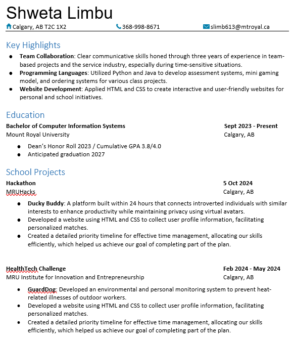
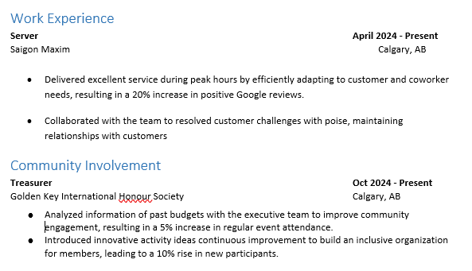

Resume
-
For more information on School Projects, click the links below:
- DuckyBuddy
- This was my first hackathon, and I was placed in a group with 4th and 5th-year students who had much more experience than I did. I initially felt the skill gap and questioned my ability to contribute to the project. However, I shifted my role to a more creative position, focusing on bringing ideas, providing feedback, and conducting research on competitors to enhance our project's value. I also assisted in creating the website to gather user information. This experience taught me that this is likely how real-world projects operate, and I'm excited to return for more fun and learning opportunities!
- GuardDog
- This was an incredible experience! Going through the entrepreneurial process while stepping outside my comfort zone, pushing my limits, and exploring technologies like Raspberry Pi, electrical components, and 3D printing was truly eye-opening. I came to appreciate the importance of teamwork in driving project success. I tested and connected our sensors to the Raspberry Pi using breadboards and wrote Python code to read the data. Although I initially struggled to understand Raspberry Pi, persevering through the challenges allowed me to discover the amazing capabilities of this mini-computer. I'm excited to continue exploring and working with it in the future!
